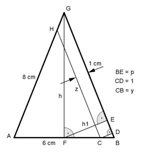

Flächenberechnungen Aufgabe 85 Die Basis eines gleichschenkligen Dreiecks ist 6 cm, ein Schenkel 8 cm lang. Wie groß ist seine Fläche A, wenn ein 1 cm breiter Streifen parallel zu einem Schenkel abgeschnitten wird?  Kathetensatz im Dreieck FBG: 3² = 8 * p | :8 9 p = --- = 1,125 cm 8 Höhensatz im Dreieck FBG: h1² = p * (8 – p) h1² = 1,125 * (8 – 1,125) h1² = 7,7 |√ h1 = 2,8 cm Strahlensatz: h1 : 1 = 3 : y 3 2,8 = --- |*y y 2,8 * y = 3 | :2,8 3 y = ----- = 1,1 cm 2,8 Strahlensatz: 8 : z = 6 : (6 – y) 8 6 --- = ------- Über Kreuz multiplizieren z 6 – y 8 * (6 – 1,1) = 6 * z 39,2 = 6z |:6 z = 6,5 cm Fläche Dreieck ACH = A A = 2 * Dreieck FBG – Trapez CBGH 8 * h1 8 + 6,5 A = 2 * --------- - --------- * 1 2 2 A = 8 * 2,8 – 7,3 = 15 cm²